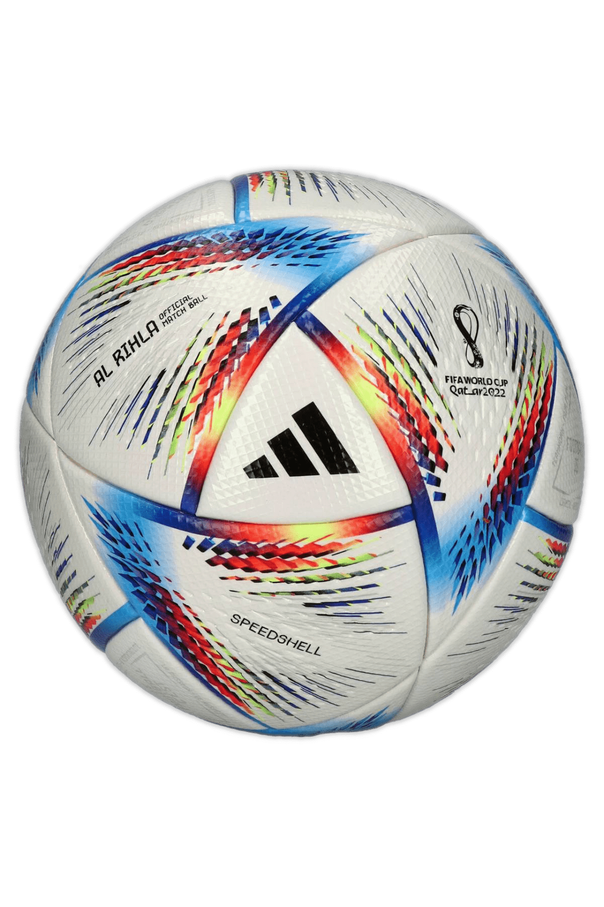
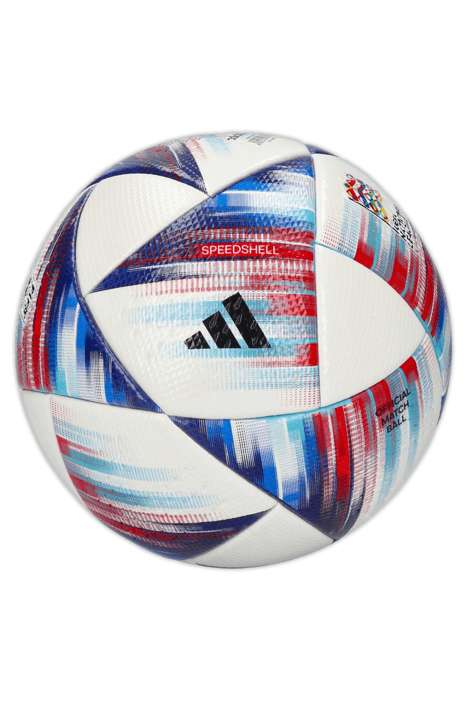
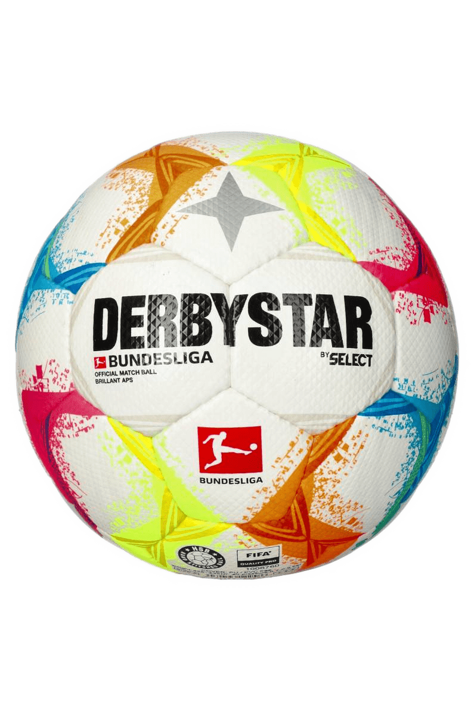
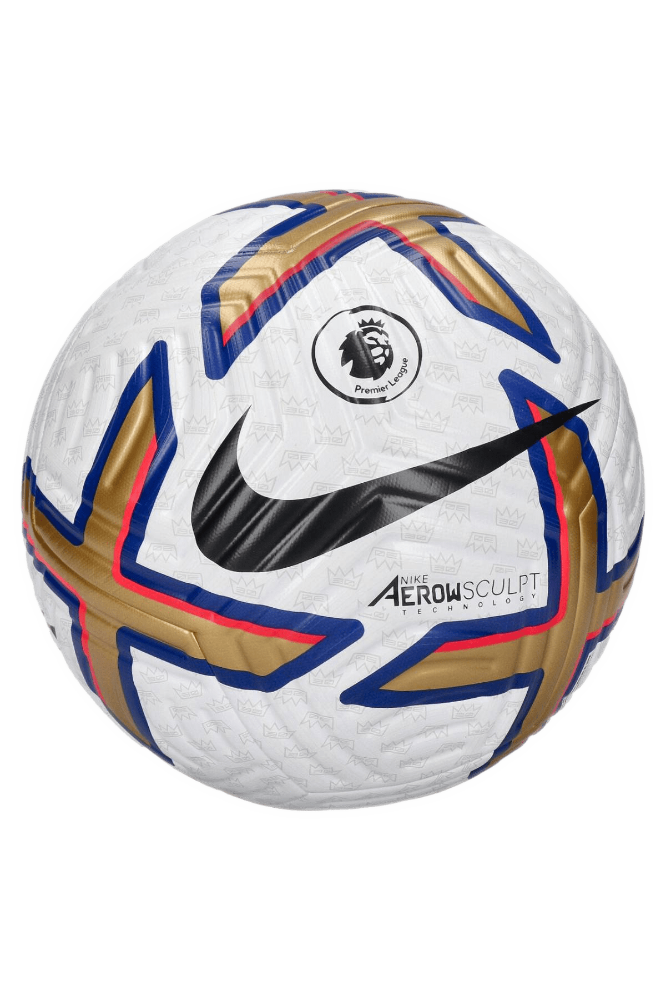
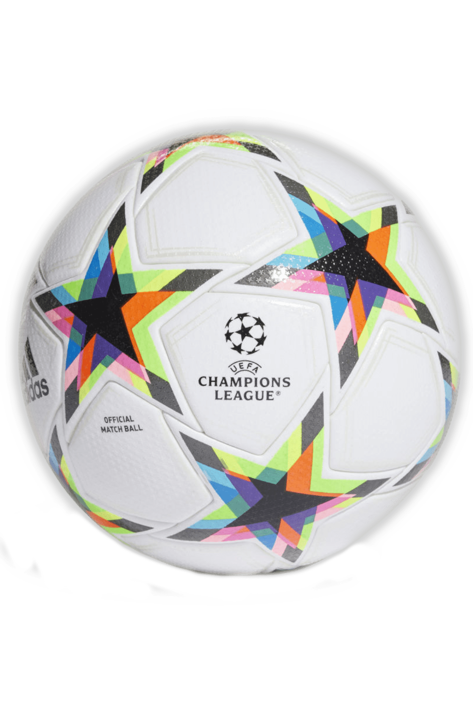

Adidas Al Rihla 2022 PRO ROZMIAR 5

Najnowsza piłka meczowa zaprojektowana specjalnie na Mistrzostwa Świata FIFA™ 2022 w Katarze. Żywa i perłowa grafika wzorowana flagą Kataru oraz tradycyjną odzieżą arabską nadaje świetny efekt wizualny.
W piłce znajduje się gumowy pęcherz, dzięki czemu powietrze utrzymuje się dłużej niezależnie od miejsca użytkowania. Zgrzewany termicznie materiał wykonany został z pianki z trzciny cukrowej i spienionego kauczuku. Piłka została wyposażona w nowoczesną technologię Speedshell zapewniającą znakomitą aerodynamikę i perfekcyjny strzał. Liczne diamentowe wytłoczenia gwarantują większą zwrotność oraz precyzję. Piłka sygnowana jest oficjalnym logiem Mistrzostw Świata FIFA™ oraz posiada certyfikat FIFA Quality PRO co sprawia, że jest to produkt najwyższej jakości. Zapakowana w kartonik idealnie sprawdzi się jako prezent.
Adidas UEFA Nations Leauge PRO ROZMIAR 5

BEZSZWOWA OFICJALNA PIŁKA MECZOWA LIGI NARODÓW UEFA.
Zjednoczony kontynent. Grafiki na piłce adidas UEFA Nations League Pro przyciągają wzrok efektem rozmycia w kolorach europejskiej rodziny piłkarskiej. Pod inspirowanym flagą designem kryje się bezszwowa powłoka, która zapewnia przewidywalną grę, a butylowy pęcherz oznacza, że modelu nie trzeba tak często dopompowywać. Znak jakości Quality Pro to najwyższa ocena FIFA.
Select Derbystar Bundesliga Brillant APS FIFA PRO V22 ROZMIAR 5

Przedstawiamy oficjalną piłkę meczową Bundesligi na sezon 2022/2023, która będzie używana przez 36 klubów Bundesligi i 2. Bundesligi rywalizować będą, nową futbolówką Derbystar.
Futbolówka została wykonana z najwyższej jakości materiałów. Jej charakterystyczna struktura poprawia prowadzenie piłki zwiększając tym samym pewność gracza na boisku, a kontrastowe kolory poprawiają jej widoczność.
W piłce Derbystar APS FIFA PRO zastosowano nowoczesną metodę podwójnego łączenia wyróżniającą się tym, że panele piłki są najpierw zszywane ze sobą, a następnie sklejane na krawędziach. Dzięki zastosowaniu kleju do uszczelniania szwów pochłanianie wody zostaje znacznie ograniczone. Pęcherz SR wewnątrz piłki zapewnia doskonałe utrzymywanie powietrza. Efektem końcowym jest piłka nożna wyróżniająca się spośród innych piłek stabilnością, znakomitym prowadzeniem i lekkim wyglądem.
Nike Premier Leauge Flight ROZMIAR 5

Udoskonalana przez 8 lat i 1700 godzin testów piłka Nike Flight Soccer Ball to rewolucja w konsekwentnym locie. Profilowane rowki i przyczepna tekstura ograniczają nieoczekiwane ruchy w powietrzu, pomagając umieścić piłkę tam, gdzie chcesz.
Technologia Nike Aerowsculpt wykorzystuje uformowane rowki, które zakłócają przepływ powietrza przez piłkę, zapewniając mniejszy opór i bardziej stabilny lot. Nakładka z atramentem drukowana w 3D precyzyjnie dostraja lot piłki, aby pomóc Ci trafić w cel strzał za strzałem, podanie za podaniem.
Technologia All Conditions Control (ACC) zapewnia przyczepną teksturę zarówno w mokrych, jak i suchych warunkach.
Adidas UCL PRO ROZMIAR 5

Udoskonalana przez 8 lat i 1700 godzin testów piłka Nike Flight Soccer Ball to rewolucja w konsekwentnym locie. Profilowane rowki i przyczepna tekstura ograniczają nieoczekiwane ruchy w powietrzu, pomagając umieścić piłkę tam, gdzie chcesz.
Technologia Nike Aerowsculpt wykorzystuje uformowane rowki, które zakłócają przepływ powietrza przez piłkę, zapewniając mniejszy opór i bardziej stabilny lot. Nakładka z atramentem drukowana w 3D precyzyjnie dostraja lot piłki, aby pomóc Ci trafić w cel strzał za strzałem, podanie za podaniem.
Technologia All Conditions Control (ACC) zapewnia przyczepną teksturę zarówno w mokrych, jak i suchych warunkach.
 żna
żna